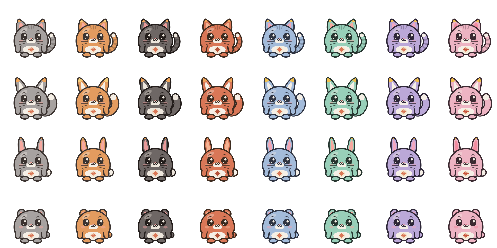
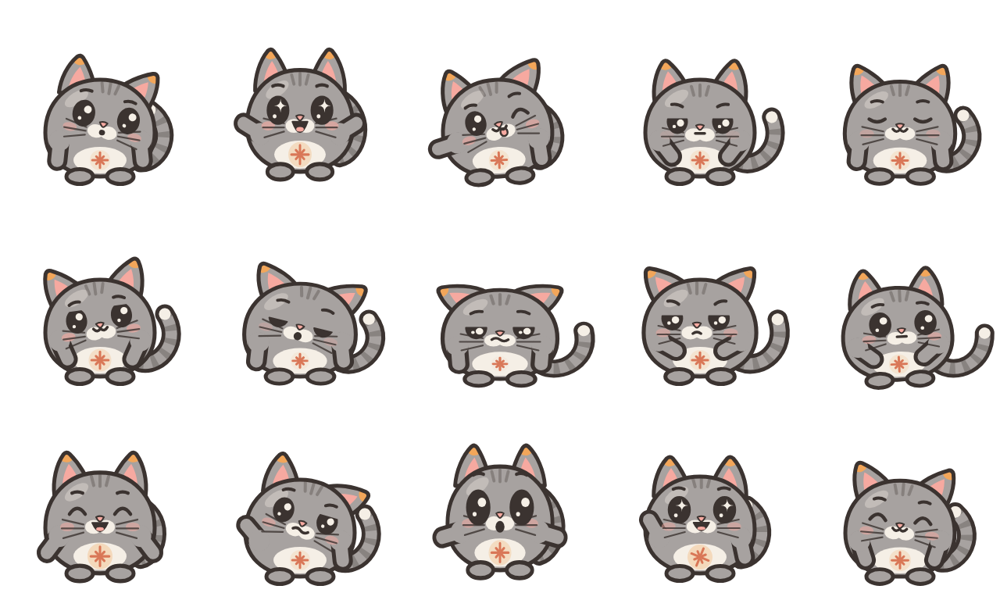

Живой питомец у вас на экране
Кай радуется, когда вы рядом, танцует под музыку, переодевается, зовёт друзей в гости и сторожит ноутбук, пока вас нет. Бесплатно и без рекламы.
Установка
Три шага — и Кай уже машет вам
Ничего дополнительно ставить не нужно: ни Python, ни Node.js. Обновления Кай потом ставит сам.
Скачайте
Кнопка «Скачать для Windows» — загрузится KaiPet-Setup.exe.
Запустите
Откройте файл и нажмите «Установить». Можно сразу включить запуск вместе с Windows.
Готово
Кай появится в углу экрана. Правый клик по нему — меню, игры, друзья и гардероб.
Скачайте
«Скачать для Mac» — загрузится KaiPet-macOS.dmg.
Перетащите
Откройте .dmg и перетащите Кая в папку «Программы».
Откройте
Первый раз: правый клик по Каю → «Открыть». Дальше он запускается как обычно.
macOS пишет «не удалось проверить разработчика»? Откройте «Системные настройки» → «Конфиденциальность и безопасность» и нажмите «Всё равно открыть». Для новых образов нужен Chrome или Edge; танцует Кай на Mac под Spotify и «Музыку» — macOS один раз спросит, можно ли ему видеть, что играет.
Windows может спросить, доверяете ли вы программе («Система Windows защитила ваш компьютер») — так бывает со всеми программами без платной цифровой подписи. Нажмите «Подробнее» → «Выполнить в любом случае». Код Кая открыт, его можно посмотреть на GitHub.
Что умеет
Он не просто сидит — он живёт рядом
Всё, что есть у Кая, работает сразу после установки.
Эмоции и характер
Следит глазами за мышкой, мурлычет, когда гладите, скучает, если давно не заходили, засыпает в кроватке.
Танцы под музыку
Spotify, Яндекс Музыка, YouTube — 11 танцев под настроение песни. Под подкасты и звонки не танцует.
Гардероб
4 вида, 8 цветов и 22 вещи — плюс свои картинки. Переодевается в шкафчике, а не на глазах.
Мини-игры
Прятки за окнами, догонялки, камень-ножницы-бумага.
Сторож
Кто-то тронул ноутбук без вас — Кай сфотографирует с веб-камеры.
Фокус и перерывы
Помодоро, отдых для глаз 20-20-20, отчёт за день.
Погода и праздники
Под дождь берёт зонтик, зимой — шапку, в день рождения — корону.
Команды словами
«Станцуй», «надень шарф», «давай в прятки», «дай пять».
Друзья
Мира, Тоша и Буня приходят в гости
- Заиграла музыка — друг подбегает, они берутся за лапки и танцуют вместе
- Скажете одному «посмейся» или «дай пять» — сделают оба
- Почти 80 разговоров на 32 темы, паузы между ними как у живых
- Иногда спорят, но всегда мирятся
- У каждого свой голос: Мира звонкая, Тоша басит, Буня пищит
Сеть Каев
Кай ходит в гости к Каю друга
Обменяйтесь кодами дружбы — и ваши Каи смогут навещать друг друга через интернет.
Код дружбы
Правый клик по Каю → «Друзья по сети» → «Мой код». Отправьте его другу, он добавит вас по коду.
В гости
Ваш Кай берёт табличку «В гостях у…», а у друга на экране появляется гость в вашем наряде: здороваются, танцуют, болтают.
Открытки
«С днём рождения!», «Скучаю» — Кай друга поднимет табличку с вашим текстом и сердечком.
Стикеры
Кай в Telegram
21 живой стикер: машет, обнимает, смеётся, держит таблички и держит Миру за лапку.
Внешность
Какой Кай будет у вас?
Переодевается прямо из меню, новый образ рисуется за 15 секунд.



Вопросы
Коротко о главном
Это бесплатно? Есть реклама?
Бесплатно и без рекламы. Код открыт, лицензия MIT.
Как обновлять?
Никак — Кай раз в день сам проверяет новую версию и предлагает обновиться в один клик. Проверить вручную: значок Кая у часов → «Проверить обновления».
Нужен ли интернет?
Только для погоды, обновлений и сети Каев. Всё остальное работает на вашем компьютере и никуда не отправляется.
Что уходит в интернет в сети Каев?
Только то, что нужно для визита: имя, которое вы сами указали, наряд Кая и текст открытки. Сообщения идут через бесплатный сервис ntfy.sh по вашему длинному коду дружбы. Сеть выключена, пока вы сами не добавите друга; гостей и открытки принимает только от друзей, а чужой запрос дружбы Кай сначала покажет вам.
Не будет ли тормозить компьютер?
Кай лёгкий: обычно 1–2 % процессора. Спрятать его можно значком у часов.
Как удалить?
Параметры Windows → Приложения → «Кай» → Удалить.
Есть версия для Mac?
Да, для Mac на Apple M1 и новее — KaiPet-macOS.dmg. На Mac Кай танцует под Spotify и «Музыку» (громкость других программ macOS не показывает), а в прятках прячется за краем экрана. На Linux Кая можно запустить из исходников.